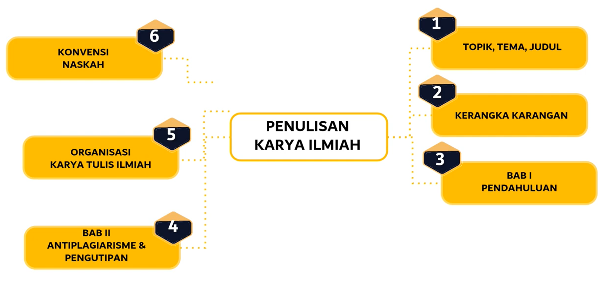

Selamat Datang di Virtual Lab Bahasa Indonesia
Virtual Lab Bahasa Indonesia adalah platform pembelajaran daring yang menyediakan panduan praktis dan interaktif tentang tata cara penulisan karya ilmiah menggunakan Bahasa Indonesia yang baku dan sesuai dengan kaidah yang berlaku. Melalui Virtual Lab ini, pengguna dapat mempelajari cara menyusun karya ilmiah yang sistematis, konsisten, dan berkualitas, mulai dari abstrak hingga daftar pustaka, serta bagaimana melakukan sitasi yang benar.
Mengapa Bahasa Indonesia Penting?
- Keseragaman dalam Komunikasi Ilmiah: Bahasa Indonesia sebagai bahasa ilmiah memastikan bahwa hasil penelitian dapat dipahami oleh seluruh kalangan akademik di Indonesia. Dengan bahasa yang seragam, karya ilmiah menjadi lebih mudah diakses dan diinterpretasikan oleh pembaca dari berbagai disiplin ilmu.
- Meningkatkan Kredibilitas Penelitian: Penggunaan Bahasa Indonesia yang baik dan benar dalam karya ilmiah meningkatkan kualitas dan kredibilitas karya tersebut. Ini menunjukkan penulis memiliki pemahaman mendalam terhadap kaidah ilmiah dan mengikuti standar nasional dalam berkomunikasi ilmiah.
- Penghargaan terhadap Sumber dan Keaslian Karya: Penggunaan Bahasa Indonesia dalam penulisan ilmiah juga mencerminkan penghargaan terhadap sumber-sumber referensi yang digunakan, serta menjaga keaslian karya ilmiah dari praktik plagiarisme. Bahasa yang tepat membantu penulis mengekspresikan ide-ide dengan akurat dan jujur.
- Mempermudah Evaluasi dan Pembelajaran: Bahasa Indonesia yang baku dalam karya ilmiah membantu para penguji, reviewer, dan pembaca dalam mengevaluasi isi penelitian secara lebih mudah dan objektif. Bahasa yang jelas dan sistematis membuat gagasan utama, metodologi, dan hasil penelitian lebih mudah diikuti.
- Komunikasi yang Efektif: Penggunaan Bahasa Indonesia yang baik dalama karya ilmiah memungkinkan gagasan, hasil penelitian, dan pemikiran dapat disampaikan secara jelas dan efektif kepada pembaca.
Manfaat Virtual Lab Bahasa Indonesia
Virtual Lab kami menyediakan pengalaman praktis dalam:
- Meningkatkan Kemampuan Penulisan Ilmiah: Virtual Lab menyediakan latihan dan panduan praktis untuk membantu pengguna meningkatkan kemampuan menulis karya ilmiah menggunakan Bahasa Indonesia yang baku dan sesuai dengan standar akademik. Pengguna dapat mengembangkan keterampilan menulis yang lebih efektif dan profesional.
- Mendukung Pemahaman Kaidah Bahasa: Dengan akses ke simulasi interaktif, pengguna dapat lebih memahami aturan dan kaidah bahasa yang berlaku dalam penulisan ilmiah. Ini termasuk aturan mengenai penggunaan kata, struktur kalimat, hingga penulisan sitasi yang benar.
- Fleksibilitas dalam Pembelajaran: Virtual Lab dapat diakses kapan saja dan dari mana saja, memungkinkan pengguna belajar secara mandiri dan sesuai dengan kecepatan mereka sendiri. Ini memudahkan para akademisi, mahasiswa, dan peneliti untuk terus belajar di sela-sela kesibukan.
- Menghemat Waktu dan Sumber Daya: Dengan adanya pembelajaran daring, pengguna dapat menghemat waktu yang biasanya dihabiskan untuk menghadiri pelatihan tatap muka atau mencari bimbingan langsung. Virtual Lab juga mengurangi biaya yang terkait dengan perjalanan dan penggunaan fasilitas fisik.
- Meningkatkan Kepatuhan terhadap Kaidah Ilmiah: Pengguna Virtual Lab akan lebih siap dalam menyusun karya ilmiah yang sesuai dengan kaidah ilmiah dan etika penulisan. Ini akan membantu mereka menghasilkan karya yang lebih dihargai di kalangan akademik dan meminimalkan risiko kesalahan dalam penulisan.
Mulai Perjalanan Bahasa Indonesia Anda Hari Ini!
Jelajahi video pembelajaran dan latihan praktik kami untuk memulai karir yang menarik di dunia Bahasa Indonesia.
Visualisasi Pembelajaran Bahasa Indonesia
Gambar di bawah ini mengilustrasikan pembelajaran Bahasa Indonesia dalam Karya Ilmiah:
Gambar: Konsep Utama Pembelajaran Bahasa Indonesia